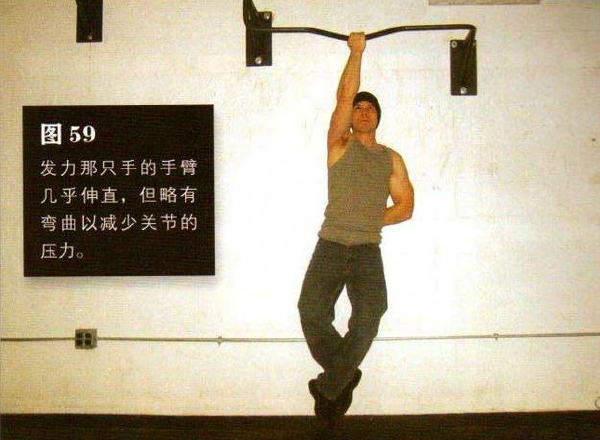
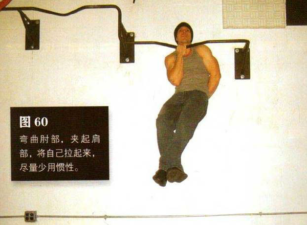

向上跳起，单手以最容易发力的抓握姿势牢牢抓住高过头顶的横杆。双腿离地，双膝弯曲，脚躁交叠在一起并置于身后，以防止腿部摆动。另一只手可随意放置，舒服即可。（你在练习第八式单臂半引体向上时，应该已经找到了最舒服的姿势）。发力的肩部要收紧，同时全身绷紧准备做动作。你将要做的可是高级力量技巧，所以你需要在心理上也做好准备。
发力那只手的手臂几乎伸直，但略有弯曲以减少关节的压力
弯曲肘部，夹起肩部，将自己拉起来，直到下巴高过横杆。在整个动作过程中，尽量少用惯性。这是该动作的结束姿势（图 60）。暂停一下，再缓慢地放低身体，回到起始姿势。在最低处暂停一下，再重复动作—如果你行的话。
初级标准：1 组，1 次
中级标准：2 组，各 3 次
高级标准：2 组，各 6 次